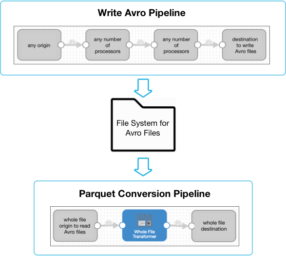
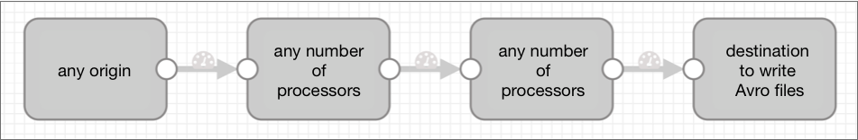
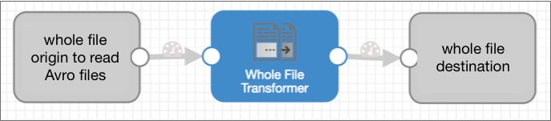
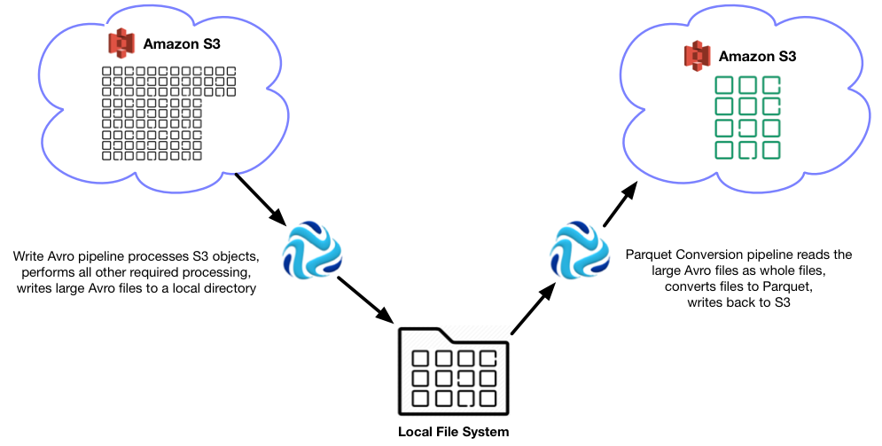
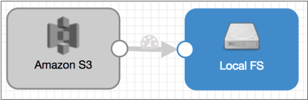
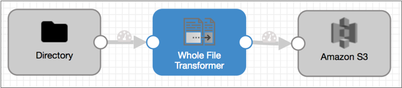

Whole File Transformer
Supported pipeline types:
|
Origins and destinations that support whole files include cloud storage stages such as Amazon S3, Azure Data Lake Storage, and Google Cloud Storage, and as well as local and remote file systems such as Local FS, SFTP/FTP/FTPS Client, and Hadoop FS. For a full list of whole file origins and destinations or more information about the whole file data format, see Whole File Data Format.
You can use the Whole File Transformer to convert Avro files to Parquet within a pipeline. If a Hadoop cluster is available, you can use the MapReduce executor to convert Avro files to Parquet instead of the Whole File Transformer. The MapReduce executor delegates the conversion task to the Hadoop cluster. For a case study on capturing data drift and producing Parquet files using the MapReduce executor, see Parquet Case Study.
When performing the conversion of Avro files to Parquet, the Whole File Transformer performs the conversion in memory, then writes a temporary Parquet file in a local directory on the Data Collector machine. Ensure that Data Collector has the necessary memory and storage to perform this processing.
When you configure the Whole File Transformer, you specify the local directory to use. You can configure a prefix and suffix for the resulting Parquet files and the buffer size and rate at which to process the Avro files. You can also configure standard Parquet properties, such as a compression codec, row group size, and page size.
Typically, when using the Whole File Transformer processor, you will use a separate pipeline for processing data and generating the Avro files to be converted. But if you have Avro files generated by a third party, then you can simply create the pipeline to convert the files to Parquet.
Implementation Overview
When using the Whole File Transformer processor, you will typically configure two pipelines. The pipeline that includes the Whole File Transformer must be a whole file pipeline, which does not permit additional processing of file data. As a result, any processing that you require must take place in a separate pipeline.
This separate pipeline includes an origin to read data of any data format, the processors that you need, and a file-based destination to write Avro files. Let's call this pipeline the Write Avro pipeline. If you already have Avro files ready, you can skip this pipeline.
Then, a second pipeline reads the Avro files using the whole file data format, transforms the files to Parquet using the Whole File Transformer, then writes the Parquet files as whole files. Let's call this the Parquet Conversion pipeline.
Together, the implementation looks like this:

Write Avro Pipeline
The Write Avro pipeline reads data from the origin, performs any required processing, and uses a file-based Avro destination such as Local FS to write Avro files to a file system.
The destination file system acts as a staging area. As the Write Avro pipeline closes each Avro file, the Parquet Conversion pipeline can begin processing the file and convert it to Parquet.
Since each Avro file is ultimately transformed to a corresponding Parquet file, the Avro files should be of substantial size to take advantage of Parquet capabilities. 2 GB is recommended.
The Write Avro pipeline includes any origin, any number of processors, and an Avro-enabled file-based destination, as follows:

For a list of destinations that support writing Avro, see Data Format Support.
Parquet Conversion Pipeline
The Parquet Conversion pipeline processes the closed Avro files as whole files, leveraging the efficiency of the whole file data format. This pipeline converts the Avro files to Parquet using the Whole File Transformer processor.
The Parquet Conversion pipeline must use a file-based origin enabled for whole files, such as the Directory origin, to process the large Avro files.
The Whole File Transformer processor converts each Avro file to Parquet, writing each Parquet file temporarily to a user-defined Data Collector directory. Then a whole file destination, such as Google Cloud Storage, moves the Parquet file to the destination system.
Whole files can only be processed by the Whole File Transformer, so this pipeline performs no additional processing.
As a result, the Parquet Conversion pipeline looks like this:

For a step-by-step review of creating these pipelines, see the implementation example.
For a full list of whole file origins and destinations, see Data Format Support.
Memory and Storage Requirements
When performing the conversion of Avro files to Parquet, the Whole File Transformer performs the conversion in memory, then writes a temporary Parquet file in a local directory on the Data Collector machine. Ensure that Data Collector has the necessary memory and storage to perform this processing.
The available memory is determined by the Data Collector Java heap size. The available storage is the available disk space on the Data Collector machine. Pipelines using the Whole File Transformer processor require available memory and storage based on the size of the largest Avro file to be converted.
For example, when converting files that are up to 2 GB in size, ensure that Data Collector has at least 2 GB of available memory and storage when the pipeline runs.
Generated Record
When processing whole files, the Whole File Transformer processor updates the file information in the whole file record and adds a record header attribute.
Whole file records include fields that contain file reference information. The record does not include any actual data from the file to be streamed.
sourceFileInfo. It then updates the fileInfo field with information
for the temporary Parquet file, such as the updated path and file location. Implementation Example: Amazon S3 Parquet Conversion
Let's say we have several thousand small objects in Amazon S3. We want to convert the numerous small objects to large Parquet objects so we can more quickly analyze the data.
To do this, we set up two pipelines. The first pipeline reads the Amazon S3 objects and writes large Avro files to a local file system. This is the Write Avro pipeline. The second Parquet Conversion pipeline reads the Avro files as whole files and transforms each file to a corresponding Parquet file, which is written back to S3.
The resulting workflow looks like this:

Write Avro Pipeline
The Write Avro pipeline can be pretty simple - it just needs to write large Avro files. You can make it complicated by performing additional processing, but at its most basic, all you need is an origin and an Avro-enabled file-based destination to write the Avro files.
The Write Avro pipeline uses the Amazon S3 origin to read the multitude of small S3 objects. Then, it writes Avro files to a local file system using the Local FS destination, as follows:

Note the following configuration details:
- Amazon S3 origin
- The Amazon S3 origin requires no special configuration. We simply configure it to access the objects to be processed and specify the data format of the data. Configure error handling, post-processing, and other properties as needed.
- Local FS destination
- In the Local FS destination, we carefully configure the following
properties:
- Directory Template - This property determines where the Avro files
are written. The directory template that we use determines where the
origin of the second pipeline picks up the Avro files.
We'll use
/avro2parquet/. - File Prefix - This is an optional prefix for the output file name.
When writing to a file, the Local FS destination creates a temporary file that uses
tmp_as a file name prefix. To ensure that the second pipeline picks up only fully-written output files, we define a file prefix for the output files. It can be something simple, likeavro_. - Read Order - To read the files in the order they are written, we use
Last Modified Timestamp. - Max File Size - The Avro files are converted to Parquet files in the
second pipeline, so we want to ensure that these output files are
fairly large. Let's say we want the Parquet files to be roughly 3 GB in size, so we set Max File Size to
3 GB.Important: To transform the Avro files, the Whole File Transformer requires Data Collector memory and storage equivalent to the maximum file size. Consider this requirement when setting the maximum file size. - Data Format - We select
Avroas the data format, and specify the location of the Avro schema to be used.
- Directory Template - This property determines where the Avro files
are written. The directory template that we use determines where the
origin of the second pipeline picks up the Avro files.
Parquet Conversion Pipeline
The Parquet Conversion pipeline is simple as well. It uses the whole file data format, so no processing of file data can occur except the conversion of the Avro files to Parquet.
We use the Directory origin and whole file data format to read the fully written Avro files. Then comes the Whole File Transformer processor for the Parquet conversion, and the Amazon S3 destination to write the Parquet files back to S3 as whole files.
The Parquet Conversion pipeline looks like this:

Note the following configuration details:
- Directory origin
- In the Directory origin, we carefully configure the following properties:
- Files Directory - To read the files written by the first pipeline,
point this to the directory used in the Local FS Directory Template
property:
/avro2parquet/. - File Name Pattern - To pick up all output files, use a glob for file
name pattern:
avro_*.We use the
avro_prefix in the pattern to avoid reading the active temporary files generated by the Local FS destination. - Data Format - We use
Whole Fileto stream the data to the Whole File Transformer.
- Files Directory - To read the files written by the first pipeline,
point this to the directory used in the Local FS Directory Template
property:
- Whole File Transformer processor
- The Whole File Transformer processor converts Avro files to Parquet in memory, then writes temporary Parquet files to a local directory. These whole files are then streamed from the local directory to Amazon S3.
- Amazon S3 destination
- The Amazon S3 destination streams the temporary Parquet files from the Whole File Transformer temporary file directory to Amazon S3.
Runtime
We start both pipelines at the same time.
The Write Avro pipeline processes Amazon S3 objects and writes 3 GB Avro files to the
/avro2parquet/ directory. The output files are named
avro_<file name>.
After the first file is written, the Parquet Conversion pipeline picks up the file. It
streams the file from the Directory origin to the Whole File Transformer processor. The
Whole File Transformer converts the Avro file to Parquet in memory, and writes it to the
specified temporary directory, /tmp/out/.parquet. The temporary file
then streams from the Whole File Transformer to the Amazon S3 location defined in the
destination.
In the end, the multitude of Avro files are converted to large columnar Parquet files and streamed back to Amazon S3 for easy analysis. Two simple pipelines, one Whole File Transformer, and you're done!